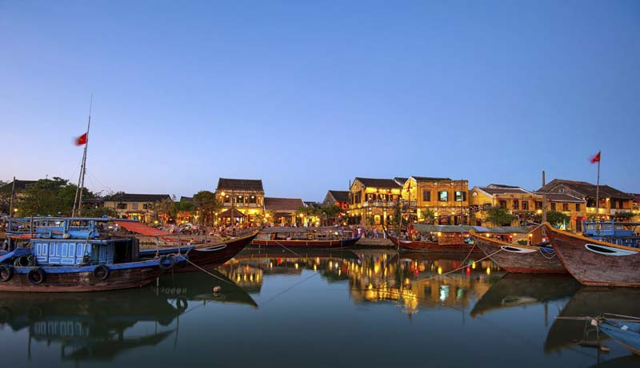
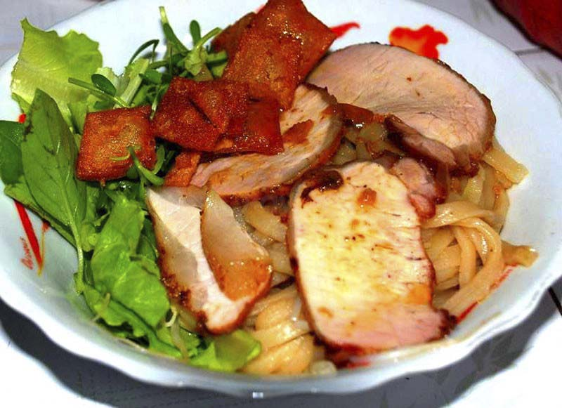

Miền Trung Việt Nam gồm Bắc Trung Bộ, Nam Trung Bộ và Tây Nguyên, là giao điểm của sông núi hữu tình, thiên nhiên hùng vĩ, văn hóa đặc sắc. Miền trung còn sở hữu những bãi biển cát trắng trải dài quyến rũ bao lòng du khách tứ phương. Một điểm dừng chân lý tưởng cho người thân và gia đình bạn
Đà Nẵng có những cây cầu bắt qua sông Hàn đầy ấn tượng có thể điểm qua như cầu Rồng được vinh danh là 10 cây cầu ấn tượng nhất thế giới, cầu Quay sông Hàn vào lúc nửa đêm để cho tàu thuyền qua lại.
Nổi bật trong cung đường du lịch miền Trung, phố cổ Hội An như một bức tranh mộc mạc, giản dị và nên thơ. Dù là ngày hay đêm, Hội An vẫn mang trong mình những vẻ đẹp lôi cuốn khác nhau.
 Ngoài những giá trị văn hoá qua kiến trúc đa dạng, Hội An còn lưu giữ một nền tảng văn hoá phi vật thể khá đồ sộ. Cuộc sống thường nhật của cư dân với những phong tục tập quán, sinh hoạt tín ngưỡng, nghệ thuật dân gian, lễ hội văn hoá cùng với cảnh quan thiên nhiên thơ mộng, các món ăn đặc sản… làm cho Hội An ngày càng hấp dẫn du khách thập phương.
Nha Trang là địa danh du lịch nổi tiếng trên toàn thế giới. Không chỉ đẹp bởi cảnh sắc thiên nhiên, Nha Trang còn nổi tiếng là thành phố quanh năm ấm áp, tràn ngập ánh nắng mặt trời. Được vinh danh là một trong những vịnh biển đẹp nhất thế giới, Nha Trang có bãi biển chạy dài ôm lấy trọn vẹn thành phố, hút hồn khách du lịch bởi những bãi cát trắng dài ngút ngàn.
Đến Khánh Hòa, không chỉ có Nha Trang mà còn những hòn đảo đẹp ngỡ ngàng nằm ngoài khơi. Bạn nhất định phải ghé thăm các địa điểm như: hòn Tre, hòn Mun, đảo khỉ, suối Hoa Lan, đảo Yến, đầm Nha Phu, biển Đại Lãnh, bãi dài Cam Ranh, và càng không thể bỏ qua “TỨ BÌNH” lừng danh.
Thừa Thiên Huế là một trong ba vùng du lịch lớn nhất tại Việt Nam. Huế mang một vẻ đẹp man mác, hoài niệm về một vùng đất cố đô. Ngoài vẻ đẹp nên thơ của sống Hương, núi Ngự nổi danh...du khách còn có thể chìm đắm trên nét đẹp của quần thể di tích kinh thành Huế.